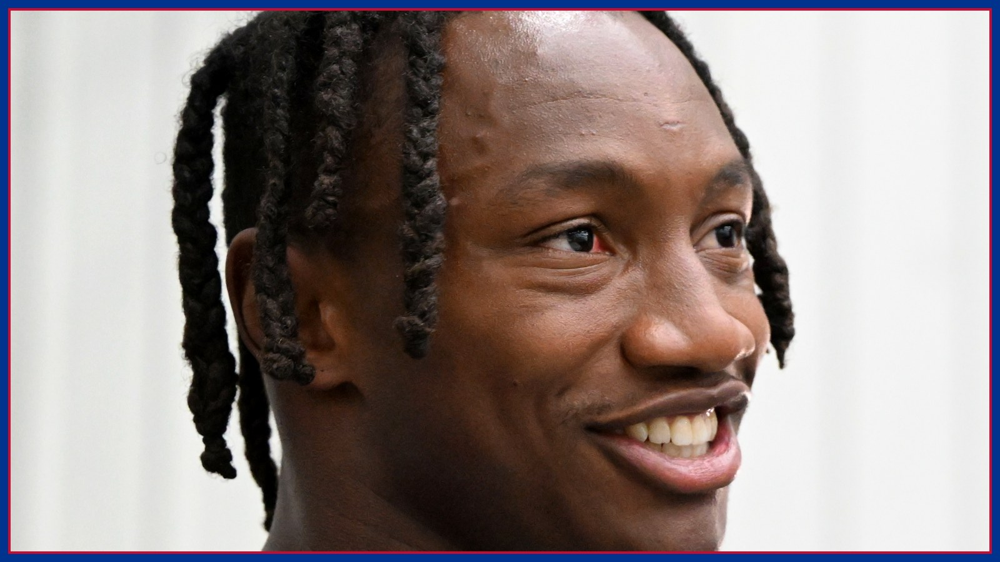

Pick your poison: Buffalo can't let Henry and Flowers both eat
Lamar Jackson is back with no designation, and with him comes Buffalo's hardest choice of the season: load up on Derrick Henry and give Zay Flowers space, or protect Flowers and let Henry dictate. Here's why Buffalo can survive one — but not both.

Here is the choice Jim Leonhard has to make before Sunday, and there is no version of it that takes everything away. The Baltimore Ravens come to Highmark Stadium on Sunday, Nov. 1 at 1 PM ET with Lamar Jackson back — a full participant all three days this week, no game designation on Friday's final report, and, per baltimoreravens.com, head coach Jesse Minter announced Friday that Jackson will play after missing three straight games with a high ankle sprain. With Jackson back, Baltimore gets its two-man stress test back with him: Derrick Henry downhill, and Zay Flowers everywhere else. As Athlon reported Saturday morning, Locked On Bills host Joe Marino put the dilemma plainly: Buffalo does not have to erase every Ravens weapon, but it cannot let Henry and Flowers control the game together. Film Room agrees — and the tape shows why letting both eat is how this game gets away.
Start with Henry, because he sets the math. In eight career meetings with Buffalo, Henry has averaged 102 rushing yards per game and scored 11 touchdowns — the history this site broke down earlier this week. The recent form is colder: 103 rushing yards total over his last two games at 3.02 yards a carry, a season average under 4.0 yards a carry for the first time in his career, and three straight games without a rushing touchdown. That slump is exactly why the tempting plan is to load the box, dare a returning quarterback to beat you, and finish the Henry argument early. It is also exactly the plan Baltimore wants you to declare — because every extra defender you walk down toward Henry is one less body where Flowers lives.
Flowers is not a complementary piece you clean up after the run is stopped. He is a screen, a jet motion, and a separation problem in one player. Against Cincinnati last week, per NBC Sports, Flowers turned a third-and-9 screen into a 48-yard touchdown and finished with 8 catches for 137 yards and a touchdown. That play is the whole warning: you do not have to throw deep to Flowers to lose to him. You just have to be outnumbered at the catch point, with your second level turned toward Henry and Jackson, and let him run after the catch into space your box count created. If Buffalo sells out early, Flowers does not need ten targets. He needs three touches in space.
Now look at who Buffalo has to solve that with. Ed Oliver is the good news in the middle: after missing the past two games with a knee injury, Oliver was a full participant Friday and carries no designation, per Friday's final report, and Bradley Chubb is cleared the same way. That interior help matters against Henry, because it lets Leonhard win some early-down snaps without stealing a safety to do it. The back end is thinner. Buffalo plays Sunday without C.J. Gardner-Johnson, whose one-game suspension was upheld on appeal — he is out for the Ravens game and eligible to return Nov. 2. Slot corner Dee Alford, meanwhile, is questionable after going limited Wednesday and then not practicing Thursday or Friday with an ankle injury, per Friday's report. A defense that ranks 31st in yards allowed and 28th in scoring defense at 28.5 points per game allowed, per the facts tracked from Athlon and AP reporting, does not have spare coverage answers to waste.
So what does the smart version look like on film? It is not a base defense. It is a series of early-down lies. Show Henry a loaded front before the snap, then rotate out of it after the handoff fake is sorted — make Baltimore declare run or pass before Buffalo declares its numbers. Keep two-high structure on the snaps Jackson is most likely to throw, bracket Flowers with leverage that pushes him back inside toward help, and accept that Mark Andrews and Rashod Bateman will get their underneath looks. That last part is the discipline Marino flagged, per Athlon: the complementary options cannot be allowed to become the reason Buffalo abandons its focus on the two primary threats. Four catches for Andrews hurt. Four explosive touches split between Henry and Flowers lose the game.
The other half of the pick-your-poison game is Buffalo's offense keeping Leonhard off the impossible snaps. Buffalo enters 5-1 to Baltimore's 4-3, at home and off the bye, with an offense Ravens Wire noted is averaging an NFL-best 32.8 points per game, and with James Cook averaging 5.34 yards per carry as the early-down engine. Every long Cook-and-Josh Allen drive is a drive where Henry and Flowers are watching, the box-count argument resets, and Jackson has to chase the game instead of dictating it. The quickest way to lose the dilemma is to fall behind early and spend the afternoon choosing in obvious passing and running situations, where Baltimore already knows which poison you picked.
Sunday inactives, about 90 minutes before kickoff, will settle the last variables — Spencer Brown, DJ Moore and Dalton Kincaid are all questionable for Buffalo after limited weeks, with Moore and Kincaid in non-contact jerseys throughout the week per Friday reporting, and their availability changes how much Buffalo can score its way out of a defensive mistake. But the central choice is already set. Take Henry's early-down efficiency away without handing Flowers the space to turn screens into touchdowns. Do one of those things and Buffalo can win a hard, honest game. Do neither, and both men will tell you by the fourth quarter which poison you actually picked: both. Go Bills.
The BNC Blitz is free: the day's Bills news, one stat that matters, and one take, every morning. Join to keep reading — and never miss the end of a story again.